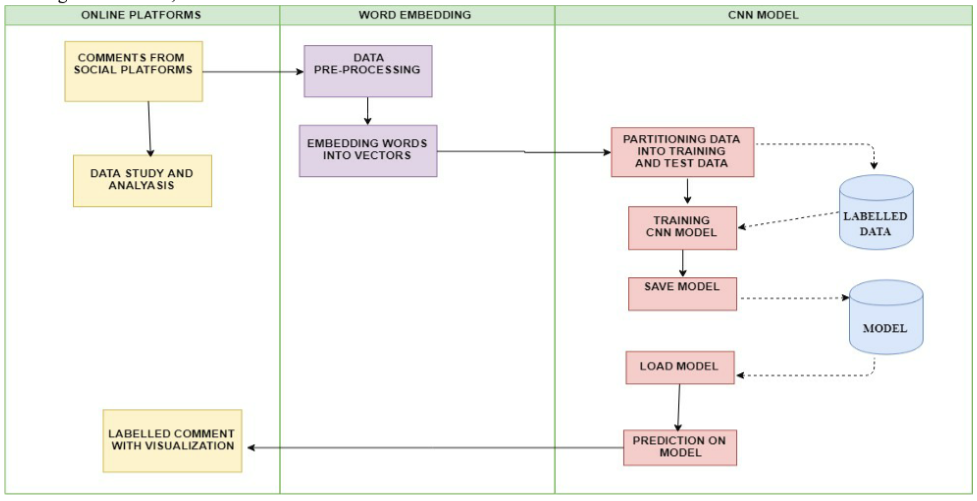

No More Toxicity
What is the Issue we are dealing with?
Communication on the social forums is one of the most utilized methods of online conversation and expressing oneself today. Discussing things and giving opinions over particular thing or post can be difficult. On these platforms’ abuses, online harassment, jeering and cyber-bullying over comments can have negative impact on a person's psychological health and life.
It leads to many people stop expressing themselves and give up on seeking different opinions.Using manual moderation is ineffective and failing to curb the issue. So to deal with this issue we came up with this idea.
What exactly is Rosenta?
Rosenta is a system which uses Fast-Textword embedding technique and CNN for multi label classification task of toxic comments. In this system, input as comments will be fed from social sites which will be analyzed and send to word embedding phase. In this, sentences are broken into words and embedded into vectors which can be processed by CNN. After evaluation by trained CNN model, a resultant labels or categories of toxicity will be predicted and can be visualized.
The goal is to classify the comments or sentences based on their toxicity level into various categories. By categorizing these comments, the action team can take appropriate actions to curb the occurrence and growth of negative influences created with such activities on social platforms. Such a multi-label classification model will make the purpose of social conversation on social media more effective and positive. By automating this comment classification approach, the companies can save their time and manual efforts in moderating these platforms.
Can you share its working?
Have a look at our System Architecture
